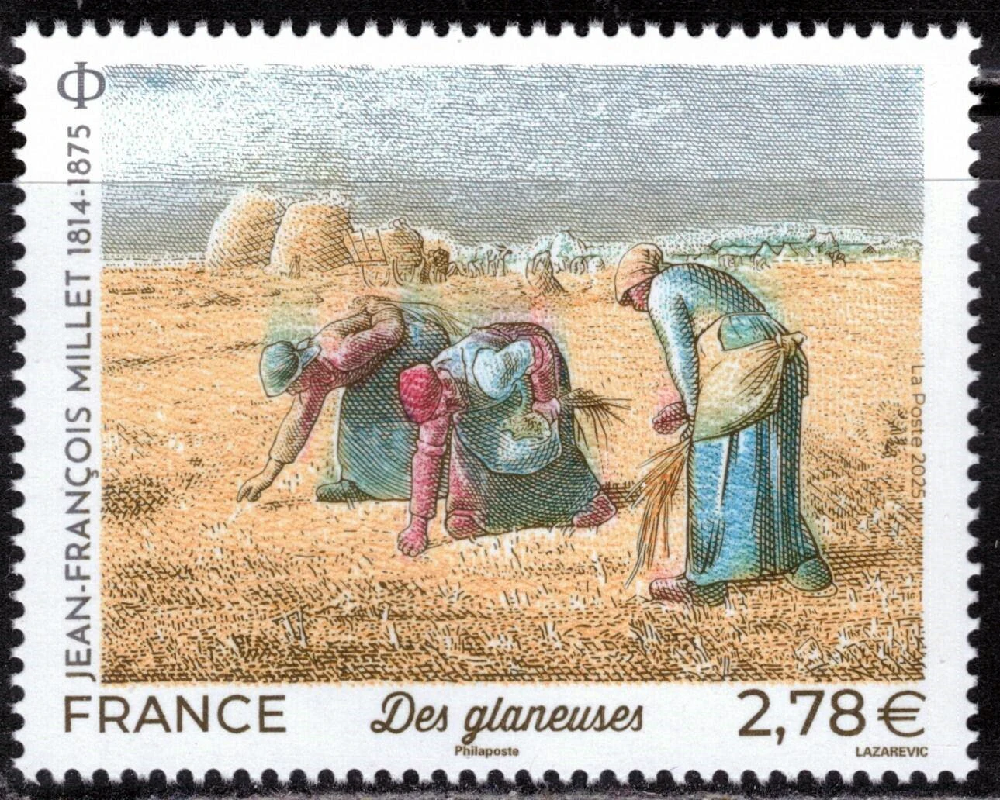
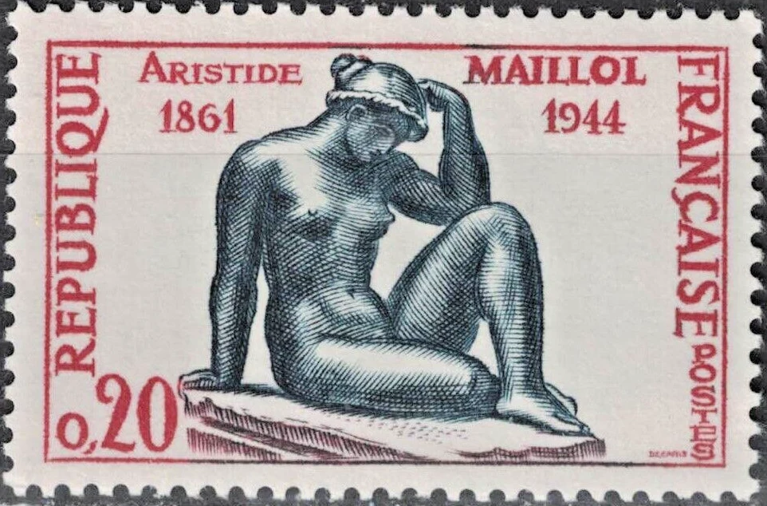
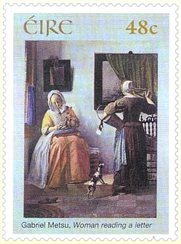
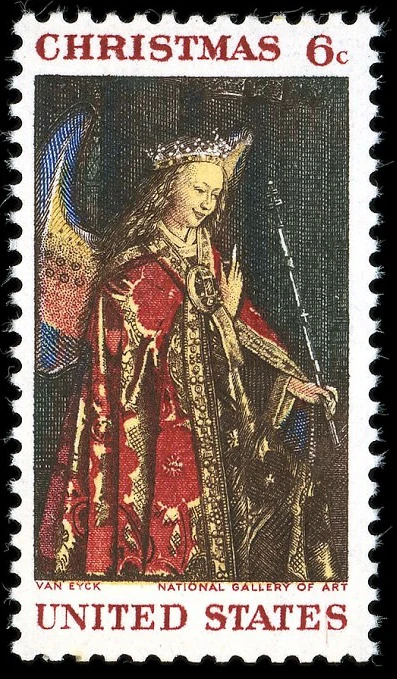
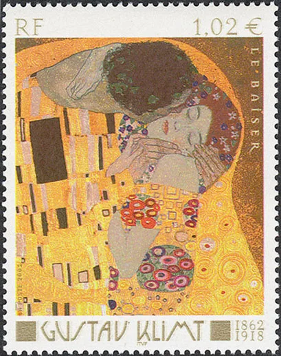
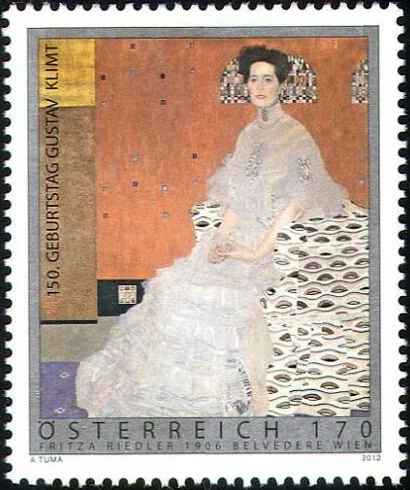

A year-end journey through the world of painting, seen through the extraordinary miniature canvas of the postage stamp. From the gardens of Claude Monet to the quiet interiors of the Dutch Golden Age and the golden ornament of Gustav Klimt, each selection invites a closer look.
The artworks are shown on genuine philatelic reproductions from the Art on Stamps archive. The exhibition is a thematic selection for the end of 2026; the stamps themselves were issued in different years.

01 · Realism
The Gleaners (Des glaneuses)
Jean-François Millet
Jean-François Millet (1814–1875) painted The Gleaners in 1857, portraying three rural women collecting leftover stalks of wheat after the harvest. Their bent figures and the distant abundance of the fields turn an ordinary agricultural task into a dignified reflection on labour, poverty and social inequality. The painting belongs to the Musée d’Orsay in Paris. France honoured Millet with this engraved stamp in 2025.
France · 2025 · Yvert & Tellier 5839

02 · Modern Sculpture
La Méditerranée
Aristide Maillol
Aristide Maillol (1861–1944) developed a sculptural language of serene, balanced human forms. His seated female figure La Méditerranée, conceived in the early twentieth century, expresses calm through its compact pose and harmonious contours. France issued this stamp in 1961 for the centenary of the sculptor’s birth; Albert Decaris designed and engraved the miniature tribute.
France · 1961 · Scott 984 · Michel 1334

03 · Dutch Golden Age
Reading a Letter
Gabriel Metsu
Metsu was particularly skilled at painting fabrics, furniture and the changing expressions of his sitters. Letters in seventeenth-century Dutch genre painting can evoke love, absence or news from afar. Here, the stamp preserves the quiet suspense of a private moment.
Ireland · 2003

04 · Early Netherlandish Art
The Annunciation — Angel Gabriel
Jan van Eyck
Jan van Eyck (c. 1390–1441) was a master of early Netherlandish painting, celebrated for extraordinary detail and luminous colour. This 1968 United States Christmas stamp isolates the richly robed angel Gabriel from his Annunciation, painted around 1434–1436. The original work is in the National Gallery of Art, Washington, D.C. The stamp translates the painting’s intricate textures into an elegant engraved image.
United States · 1968 · Scott 1363 · Michel 972y (tagged issue)

05 · Vienna Secession
The Kiss
Gustav Klimt
Gustav Klimt (1862–1918), a leading figure of the Vienna Secession, created The Kiss in 1907–1908. The embracing couple appears wrapped in a luminous pattern of gold and ornament. Klimt combines human tenderness with the flat, decorative surfaces that made his mature style distinctive.
France · 2002

06 · Vienna Secession
A Portrait in Pattern
Gustav Klimt
Klimt’s portraits transformed the human figure through decorative colour, intricate textiles and stylised backgrounds. His work reflects the rich artistic culture of Vienna around 1900. In philatelic reproduction, the ornamental details become especially fascinating to inspect.
Austria · 2012
07 · Dutch Golden Age
Girl with a Pearl Earring
Johannes Vermeer
Johannes Vermeer (1632–1675) was a Dutch painter renowned for his subtle handling of light and intimate scenes. Painted around 1665, Girl with a Pearl Earring shows a young woman turning toward the viewer, her lips slightly parted and a luminous earring catching the light. Rather than a conventional portrait of an identified sitter, it is a tronie—a study of character, costume and expression. The original painting is held by the Mauritshuis in The Hague. Its quiet immediacy makes it especially memorable on this Netherlands postage stamp.
Thank you for visiting. May the coming year bring new discoveries in art and philately.